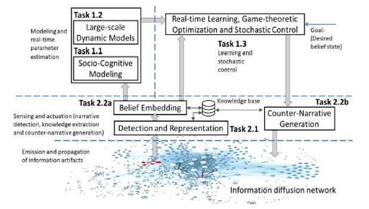
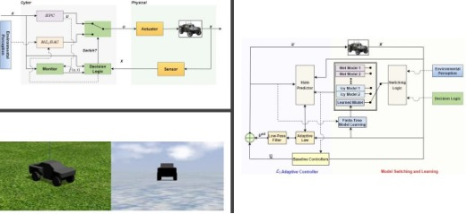

Projects
Socio-Mathematics: Foundations of Social Information Dynamics and Controls
|  | The objective of this project is to develop a mathematical theory, based on models founded in social and cognitive science, to inform defense against malicious manipulation of information flow and belief dynamics on online media. Emphasis is made on closed-loop operation, where two (or more) parties in conflict execute real-time maneuvers in the information space. Confrontation in military domains, such as land and air, is based on well-understood dynamics that inform the assignment of effects to counteract threats. In the domain of information warfare, however, the fundamental underlying system dynamics are poorly understood. The proposed work bridges the above gap by developing theoretical models that combine social sensing, social/cognitive modeling, learning, stochastic control, game theory, and network embedding in order to enable prediction of adversarial action, inform reasoning about effects in the information space, and design policies to counter malicious information operations. Confrontation in the information space aims to impact population beliefs. In a world dominated by competition on human attention, we empower defense maneuvers in the information domain by answering four interrelated questions:
|
Y. Mao, J. Li, N. Hovakimyan, T. Abdelzaher, and C. Lebiere, ‘‘Cost Function Learning in Memorized Social Networks with Cognitive Behavioral Asymmetry," submitted to IEEE Transactions on Computational Social Systems.
Y. Mao, N. Hovakimyan, T. Abdelzaher, and E. Theodorou, ‘‘Social System Inference from Noisy Observations," submitted to IEEE Transactions on Computational Social Systems.
Y. Mao, E. Akyol, and N. Hovakimyan, ‘‘Impact of Confirmation Bias on Competitive Information Spread in Social Networks," to appear in IEEE Transactions on Control of Network Systems, DOI: 10.1109/TCNS.2021.305011.
Y. Mao, and E. Akyol, ‘‘On Inference of Network Topology and Confirmation Bias in Cyber-Social Networks," IEEE Transactions on Signal and Information Processing over Networks (Special Issue on Network Topology Inference), vol. 6, pp. 633–644, 2020.
Y. Mao, S. Bolouki, and E. Akyol, ‘‘Spread of Information with Confirmation Bias in Cyber-Social Networks," IEEE Transactions on Network Science and Engineering (Special Issue on Network of Cyber-Social Networks: Modeling, Analyses, and Control), vol. 7, no. 2, pp. 688–700, 2020.
Model-Learning Based Safe Operation for Self-Driving Vehicles
|  | One of the fundamental assumptions of model-based controllers is the availability of a fairly accurate model of the underlying dynamics in consideration. However, vehicle dynamics highly depend on the driving environments, and can be significantly different from one road (e.g., asphalt) to another (e.g., snow). Therefore, a single off-line-built vehicle model cannot capture the dynamics differences induced by environmental variations, and it is unreasonable to expect that the off-line-built multiple models are sufficient to accurately describe the vehicle-environment interaction dynamics in an unforeseen or unprepared environment, as e.g. the 2019 New York City Snow Squall. If the unforeseen environments cause deviation from the safety envelope or the uncertainty measurement threshold in the time-critical environment, it is necessary to use limited sensor data to timely learn and update the vehicle model for reliable decision making. Meanwhile, as a typical cyber-physical system, autonomous vehicles integrate the vehicular cyber system with the vehicular physical system for decision making, whose increasing complexity hinders its reliability, especially when system failures occur. Furthermore, the deployment of high performance artificial intelligence (e.g., deep learning vision algorithm) makes formal verification more challenging, such that testing alone is insufficient to guarantee the correctness of safety-critical systems. To address these challenges that pose formidable threats to the safety of self-driving vehicles in unforeseen and dynamic environments, we develop a Finite-Time Model-Learning Based Simplex, which |
guarantees the reliability of autonomous vehicles through emplying an L1 adaptive controller, which compensates for uncertainties and disturbances, as a verified safe controller to tolerate concurrent software and physical failures,
timely learns and updates the vehicle model for safe operation in unforeseen driving environments, via triggering finite-time model learning when any deviation from the safety envelope or the uncertainty measurement threshold occurs,
achieves the prescribed levels of accuracy and confidence of learned model through incorporating Redundant Data Processor and leveraging sample complexity.
Y. Mao, Y. Gu, N. Hovakimyan, L. Sha, and P. Voulgaris, ‘‘Safe Velocity Regulation of Self-Driving Vehicles in Dynamic and Unforeseen Environments," submitted to ACM Transactions on Cyber-Physical Systems (Special Issue on Special Issue on Automotive CPS Safety & Security).
Y. Mao, N. Hovakimyan, P. Voulgaris, and L. Sha, ‘‘Finite-Time Model Inference from A Single Noisy Trajectory," submitted to IEEE Transactions on Automatic Control.
P. Zhao, Y. Mao, C. Tao, N. Hovakimyan, and X. Wang, ‘‘Adaptive Robust Quadratic Programs using Control Lyapunov and Barrier Functions," to appear in the 59th IEEE Conference on Decision and Control, Jeju Island, Republic of Korea, 2020.
Security and Privacy of Networked Cyber-Physical Systems
 |
Security of networked systems is a difficult task as highlighted by several recent incidents, including the distributed denial-of-service attack on Estonian web sites, and cyber attacks on smart grids. The ‘‘networked" aspect exacerbates the difficulty of securing these systems, since centralized measurement (sensing) and control are not feasible for such large-scale systems, and hence require the development of decentralized approaches, which are inherently prone to attacks. Particularly, stealthy attacks pose a significant security challenge, since it hides the attack signal in the nullspace of state-space representation and hence evades detection via conventional methods. The detection of stealthy attacks requires design principles with both security and control goals in mind. In addition to security, sensor data of multi-agent systems can be eavesdropped by the adversary to estimate/infer confidential information, see e.g., the target and home-base locations of connected autonomous vehicles in the battlefields. While from a perspective of stealthy topology attack design (e.g., topology attack in smart grids and software-defined networks), the attacker needs real-time data of some agents’ state to decide the target connection links to attack. Unfortunately, the inferred global real-time system state implies the largest scope of attackable connection links being exposed to the attacker. To address the security coupled with privacy concerns, we develop an evolving defense under privacy preserving constraint to fight stealthy attacks for networked cyber-physical systems, which |
removes the required knowledge of the misbehaving agents and the attack's start, pause, and resume times to detect the intelligent stealthy attacks,
preserves the privacy of the home-base and target locations and all real-time states of non-monitored agents from attacker,
removes the need of velocity measurements in achieving the second-order consensus in the absence of attacks.
Y. Mao, H. Jafarnejadsani, P. Zhao, E. Akyol, and N. Hovakimyan, ‘‘Novel Stealthy Attack and Defense Strategies for Networked Control Systems," IEEE Transactions on Automatic Control (Special Issue on Security and Privacy of Distributed Algorithms and Network Systems), vol. 65, no. 9, pp. 3847–3862, 2020.
Y. Mao, H. Jafarnejadsani, P. Zhao, E. Akyol, and N. Hovakimyan, ‘‘Detectability of Intermittent Zero-Dynamics Attack in Networked Control Systems," in 58th IEEE Conference on Decision and Control, Nice, France, pp. 5605–5610, 2019.
Y. Mao, E. Akyol, and Z. Zhang, ‘‘A Novel Defense Strategy Against Zero-Dynamics Attacks in Multi-Agent Systems," in 58th IEEE Conference on Decision and Control, Nice, France, pp. 3563–3568, 2019.
Y. Mao, and E. Akyol, ‘‘Detectability of Cooperative Zero-Dynamics Attack," in 56th Annual Allerton Conference on Communication, Control, and Computing, pp. 227–234, 2018.
Y. Mao, E. Akyol, and Z. Zhang, ‘‘Second-Order Consensus for Multi-Agent Systems by Time-Dependent Topology Switching," in 57th IEEE Conference on Decision and Control, Miami Beach, USA, pp. 6151–6156, 2018.
Y. Mao, and Z. Zhang, ‘‘Second-Order Consensus For Multi-Agent Systems By State-Dependent Topology Switching," in 2018 Annual American Control Conference, Milwaukee, USA, pp. 3392–3397, 2018.